전파전자통신기능사 (2022-02-12 기출문제)
1과목: 임의 구분
1. 펄스부호변조(PCM)에서 표본당 비트 수가 8일 때 레벨의 수는?
- 8
- 16
- 64
- 256
(정답률: 69%)

2. 다음 중 주파수 체배기를 설치하는 이유는?
- 부하의 변동에 의한 출력주파수에 변화가 없도록 하기 위해
- 수정발진기의 진동수보다 높은 주파수를 얻기 위해
- 기생진동을 방지하기 위해
- 전건 조작을 원활히 하기 위해
(정답률: 58%)
3. SSB 수신기에서 자동이득 조정이 곤란한 이유로 맞는 것은?
- 신호 주파수가 낮으므로
- 송신기의 출력이 적으므로
- 반송파가 존재하지 않으므로
- 측파대가 존재하지 않으므로
(정답률: 75%)
4. Radar의 구성요소 중 주요 부품이 아닌 것은?
- 고전압기
- 송수긴기
- 지시기
- 스캐너(Scanner)
(정답률: 50%)
5. 우리나라에서 채택하고 있는 지상파 디지털 TV 방송의 전송방식은?
- ATSC
- DVB
- ISDB
- SECAM
(정답률: 45%)
6. FM전파를 수신할 때 그 전파가 약하거나 0일 때 수신기의 출력에 큰 잡음이 나타나는 것을 방지하고 저주파 증폭단을 차단하는데 사용하는 회로는?
- 스텝 회로
- 스퀠치 회로
- 디엠파시스 회로
- 프리엠파시스 회로
(정답률: 69%)
7. 송신 안테나에서 발사된 전파가 수신 안테나에 도달할 때 여러 가지 통로의 차에 의해 시간적 차이가 생겨 같은 신호가 여러 번 되풀이 되어 나타나는 현상은?
- 델린저 현상
- 공전
- 자기람
- 에코
(정답률: 71%)
8. 다음 중 고이득, 저잡음 특성을 이용한 위성통신 지구국용 안테나로 사용하는 안테나는?
- 카세그레인 안테나
- 브라운 안테나
- 웨이브 안테나
- 롬빅 안테나
(정답률: 44%)
9. 다음 중 단파용 안테나에 속하지 않는 것은?
- 반파장 다이폴 안테나
- 역 L형 안테나
- 롬빅 안테나
- 빔 안테나
(정답률: 80%)
10. 다음 중 무선송신기에서 고주파 전력을 전송하기 위한 급전선의 필요조건으로 적합하지 않은 것은?
- 급전선의 파동 임피던스가 커야 한다.
- 급전선의 전송효율이 좋아야 한다.
- 절연 내력이 커야 한다.
- 타 전파의 유도방해를 주지 말아야 한다.
(정답률: 77%)
11. 다음 중 송신기에서 송신안테나까지 또는 수신안테나에서 수신기까지 접속하여 고주파 전력을 전송하는데 사용하는 선로는?
- 점퍼선
- 급전선
- 리드선
- 전력선
(정답률: 88%)
12. 다음 중 주파수 공용통신(TRS)의 특징이 아닌 것은?
- 서비스 영역이 넓다.
- 통화시간에 제한이 없다.
- 비밀통화기능이 필요하다.
- 데이터 통신 서비스가 가능하다.
(정답률: 63%)
13. NAVTEX 관련 규정 및 정보에 맞지 않은 것은?
- 수색 및 구조 정보는 경보 신호를 포함하여 정해진 시간과 무관하게 방송할 수 있다.
- 국제 NAVTEX 업무는 영어를 사용하는 협대역 직접인쇄전신(NBDP)에 의하여 518kHz에서 MSI의 방송 및 자동 수신을 말한다.
- 전파규칙에서 MSI취급 주파수는 490kHz 또는 4209.5kHz로도 지정되어 있다.
- Sea Area 3에서도 사용할 수 있다.
(정답률: 48%)
14. 다음 중 DSC(Digital Selective Calling)를 사용한 조난 중계에 대한 설명으로 틀린 것은?
- 조난 중계는 반드시 수동으로 발신되어야 한다.
- DSC에 의한 자동 또는 반자동의 조난 중계는 금지하고 있다.
- VHF DSC 또는 MF DSC로 조난 경보를 수신한 선박은 DSC에 의한 조난 중계를 할 수 없다.
- HF DSC로 조난 경보를 수신한 선박은 1시간 이상 해안국으로부터 조난 응답이 없는 경우에 한하여 DSC에 의하여 조난 중계를 할 수 있다.
(정답률: 50%)
15. 다음 중 위성통신의 다원접속방식이 아닌 것은?
- 고정 할당 다원 접속 방식
- 시분할 다원 접속 방식
- 부호 분할 다원 접속 방식
- 주파수 분할 다원 접속 방식
(정답률: 50%)
16. 다음 중 인마세트-C(Inmarsat-C)의 부가 기능에 해당되지 않는 것은?
- 자동 전화 기능
- 고기능 그룹 호출
- 축적 및 전송 방식
- 선박 보안 경보 장치
(정답률: 42%)
17. 피변조 출력 전력이 30[kW], 변조도가 60[%]인 무선 송신기의 반송파 전력은 약 몇 [kW]인가?
- 24.4
- 25.4
- 48.8
- 50.8
(정답률: 50%)
18. 송신기의 안테나으로부터 50미터 지점에서의 전계강도가 50[V/m]이었다면, 이 안테나로부터 같은 방향으로 500미터 떨어진 곳에서의 전계강도는 몇 [V/m]인가?
- 500
- 50
- 5
- 0.5
(정답률: 59%)
19. 무선통신 설비에서 공중선 전류계의 지시가 2[A]이고, 안테나공급전력이 40[W]일 때 안테나 실효저항은?
- 10[Ω]
- 20[Ω]
- 30[Ω]
- 40[Ω]
(정답률: 35%)
20. 축전지 용량 시험 회로에서 무부하시 전압이 20[V]이고, 부하저항 9[Ω]을 접속했을 때 전류의 값이 2[A]라고 한다면 축전지 내부 저항은 얼마인가?
- 1[Ω]
- 2[Ω]
- 3[Ω]
- 4[Ω]
(정답률: 59%)
2과목: 임의 구분
21. 항행 구역별(A1, A2, A3, A4)로 구비할 GMDSS 무선설비가 다르다. 해상인명안전조약 상 비상위치지시용 무선표지설비(EPIRB)를 설치해야 할 항행 구역을 모두 고른 것은?
- A1, A2, A3 해역
- A2, A3, A4 해역
- A1, A3, A4 해역
- A1, A2, A3, A4 해역
(정답률: 73%)
22. 다음 중 선박자동식별장치(Automatic Identification System; AIS)에 대한 설명으로 옳은 것을 모두 고른 것은?
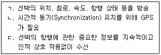
- ㄱ, ㄴ
- ㄴ, ㄷ
- ㄱ, ㄷ
- ㄱ, ㄴ, ㄷ
(정답률: 69%)
23. ITU 헌장과 협약에 규정된 주요 정책을 결정하는 최상위 기관은?
- 사무총국
- 이사회
- 전권회의
- 국제전기통신회의
(정답률: 47%)
24. 국제전기통신협약의 업무규칙 중 '전파규칙'의 약어는?
- TR
- FR
- RR
- ARR
(정답률: 54%)
25. 다음 문장의 문맥상 괄호 안에 가장 적당한 단어는?
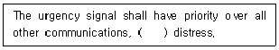
- except
- ever
- whenever
- of
(정답률: 89%)
26. 다음 문장의 밑줄 친 부분과 뜻이 다른 것은?
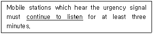
- maintain watch
- remain watch
- keep off
- keep watch
(정답률: 67%)
27. 다음 문장의 괄호 안에 들어갈 단어로 틀린 것은?
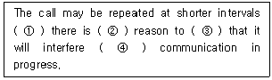
- it's
- no
- believe
- with
(정답률: 74%)
28. 다음 문장의 밑줄 친 부분을 가장 옳게 번역한 것은?
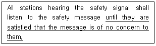
- 안전통보가 자국에 염려 없는 것을 느낄 때까지
- 안전통보가 자국에 관계없다는 것을 확인할 때까지
- 안전통보가 자국에 중요하다고 인정될 때까지
- 안전통보가 자국에 만족할 정도로 관계 있을 때까지
(정답률: 72%)
29. “What do you call the person responsible for a ship?”에 대답으로 적합하지 않은 것은?
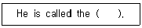
- captain
- stevedore
- master
- commander
(정답률: 44%)
30. 다음 중 'THIS'의 각 문자에 대한 영문음성통화표의 사용 단어 표기가 잘못된 것은?
- T : TANGO
- H : HOTEL
- I : INDIA
- S : STRESS
(정답률: 75%)
31. 무선전화 절차용어 중 “STOP”은 다음 중 어떤 것을 전송하기 위한 것인가?
- 숫자 2
- 숫자 6
- 숫자 9
- 종지부
(정답률: 84%)
32. 다음 중 선교 대 선교 통신은?
- ship-to-ship communications
- ship-to-shore communications
- shore-to-shore communications
- Bridge-to-bridge communications
(정답률: 89%)
33. 다음 문장의 우리말 번역으로 적합한 것은?
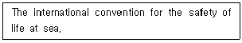
- 해상 인명구조대원 자격에 대한 조약
- 해상의 선박에 승선한 선원신분을 위한 국제조약
- 해상에서 있어서의 인명의 안전을 위한 국제조약
- 해상에서 무선통신사의 신분보장을 위한 국제조약
(정답률: 89%)
34. 다음 전문의 밑줄 친 약어 중 잘못 설명된 것은?
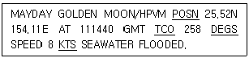
- POSN : POSITION
- TCO : TRUE COUNTING
- DEGS : DEGREES
- KTS : KNOTS
(정답률: 89%)
35. 다음 문장이 설명하는 것은 어떤 선박인가?
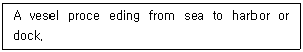
- 도선선
- 입항선
- 출항선
- 예인선
(정답률: 80%)
36. 다음 중 괄호 안에 가장 적당한 것은?
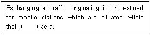
- shell
- audience
- service
- tone
(정답률: 84%)
37. Distress communications에서 조난통신을 지휘하는 국이 조난통신방해국에 전파침묵을 요구할 때 사용하는 용어는?
- SOS
- ALERT
- PAN PAN PAN
- Seelonce Mayday
(정답률: 75%)
38. 다음 문장의 괄호 안에 들어갈 알맞은 말은?
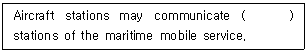
- to
- as
- on
- with
(정답률: 50%)
39. ITU 전파규칙에 부합되도록 다음 문장의 괄호 안에 들어갈 알맞은 것은?
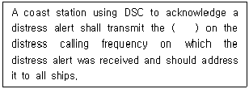
- Distress Signal
- Distress Alert
- Acknowledgement
- NAVAREA Waring
(정답률: 53%)
40. 다음 문장의 괄호 안에 들어갈 알맞은 말은?
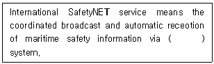
- the VHF DSC Group Call
- the MF/HF Group Call
- the Cospas-sarast Group Call
- the Inmarsat Enhanced Group Call (EGC)
(정답률: 63%)
3과목: 임의 구분
41. 다음 중 전파법에서 규정하고 있는 전파법의 목적과 거리가 먼 것은?
- 전파의 효율적인 이용
- 전파에 관한 기술의 개발을 촉진
- 공공복리의 증진
- 국위의 선양
(정답률: 79%)
42. 다음 중 전파법에서 전파를 보내거나 받는 전기적 시설을 무엇이라 하는가?
- 무선국
- 무선설비
- 방송국
- 송신설비
(정답률: 71%)
43. 이동체에 개설한 무선국에 대하여 전파를 발사하여 그 전파발사 위치에서의 방향 또는 방위를 그 무선국이 결정하게 할 수 있도록 하기 위한 무선항행업무를 무엇이라고 하는가?
- 무선표지업무
- 무선탐지업무
- 무선방향탐지업무
- 무선측위업무
(정답률: 48%)
44. 다음 중 과학기술정보통신부장관이 주파수 회수 또는 재배치를 할 때에 해당 시설자에게 통상적으로 발생하는 손실을 보상하여야 하는 경우는?
- 시설자 등의 요청에 따른 경우
- 국제전기통신연합이 모든 국가가 공통적으로 수용하여야 할 주파수 국제분배를 변경함에 따라 주파수분배를 변경한 경우
- 전파의 효율적인 이용을 위하여 필요한 경우
- 주파수의 용도가 제2순위 업무인 주파수를 사용하는 경우
(정답률: 47%)
45. 전파이용 촉진과 새로운 전파 관련 기술 개발과 전파방송기기 산업의 발전 등을 위한 전파진흥기본계획은 몇 년마다 수립해야 하는가?
- 2년
- 3년
- 4년
- 5년
(정답률: 83%)
46. 다음 중 주파수분배 시 고려해야 할 사항으로 틀린 것은?
- 주파수의 사용제한
- 국제적인 주파수 사용동향
- 전파이용 기술의 발전추세
- 전파를 이용하는 서비스에 대한 수요
(정답률: 39%)
47. 전파법에 규정된 과태료를 부과 또는 징수하는 기관에 해당되는 것은?
- 국가정보원
- 한국방송통신전파진흥원
- 한국전파진흥협회
- 과학기술정보통신부
(정답률: 75%)
48. 다음 중 신고하고 개설할 수 있는 무선국에 포함되지 않는 것은?
- 간이무선국용 무선설비 중 차량에 설치하지 않는 휴대용 무선기기
- 전파천문업무를 행하는 수신전용 무선기기
- 전기통신사업법에 따라 기간통신역무를 제공하기 위한 PCS무선국
- 아마추어국
(정답률: 50%)
49. 다음 중 VHF DSC에서 발생된 허위의 조난경보를 취소하는 절차에 대한 설명으로 틀린 것은?
- 즉시 장비의 전원을 끈다.
- 장비를 다시 작동시켜 채널 16번으로 선택한다.
- 근처 해안국을 호출하여 본선의 성명, 호출부호 등을 통보한다.
- 통보 내용에 “본선에서 몇시 몇분에 발신된 조난 경보를 취소한다.”는 사항을 포함한다.
(정답률: 36%)
50. 다음 중 무선국에 배치할 수 있는 무선종사자는?
- 피성년후견인
- 형법 중 내란의 죄를 범하여 형을 선고받고 그 집행이 끝나고 5년이 지나지 아니한 자
- 전파법을 위반하여 금고 이상의 형을 선고받고 그 집행이 끝난 후 2년이 지난 자
- 국가보안법을 위반하여 금고 이상의 형을 선고받고 그 집행이 끝난 후 2년이 지난 자
(정답률: 77%)
51. 송신장치의 종단증폭기 정격출력을 무엇이라고 하는가?
- 평균전력
- 규격전력
- 첨두전력
- 반송파전력
(정답률: 64%)
52. 다음 중 초단파대 양방향 무선전화장치(2-Way VHF)에 대한 설명으로 틀린 것은?
- 전원 공급 후 5초 이내에 작동할 수 있을 것
- 156.8[MHz]를 포함한 2파 이상의 주파수를 사용할 수 있을 것
- 방수복용 장갑을 착용한 상태에서 쉽게 조작할 수 있어야 하며, 휴대용의 경우 휴대하기 편리할 것
- 전지 용량은 송신시간의 수신시간에 대한 비율은 9:1로 하여 8시간 이상 작동하기에 충분할 것
(정답률: 65%)
53. 다음 괄호 안에 들어갈 알맞은 숫자는?
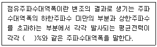
- 0.1
- 0.3
- 0.5
- 1
(정답률: 47%)
54. 다음 중 ITU의 기본구조와 정신에 관한 헌장의 주요 내용에 포함되지 않는 것은?
- 연합의 기능에 관한 기타 규정
- 전기통신에 관한 일반 규정
- 전기통신업무 운용에 관련된 각종 규정
- 전파통신에 관한 특별 규정
(정답률: 65%)
55. 다음 중 국제전기통신연합의 헌장에서 규정하는 전기통신에 관한 일반 규정이 아닌 것은?
- 유해한 통신
- 전기통신의 중지
- 전기통신의 비밀
- 관용통신의 우선순위
(정답률: 74%)
56. 항해경보, 기상경보, 기상예보 또는 긴급한 정보를 선박 앞으로 방송하는 것을 무엇이라 하는가?
- 해사기상정보
- 해사안전정보
- 해사긴급정보
- 해사조난정보
(정답률: 57%)
57. 총톤수 300톤 이상 500톤 미만의 화물선에는 최소한 몇 대의 양방향 VHF 무선전화장치를 비치해야 하는가?
- 1대
- 2대
- 3대
- 4대
(정답률: 89%)
58. 다음 중 통신보안의 목적으로 적절하지 않는 것은?
- 신속한 통신의 소통
- 정보 누설량의 최소화
- 비밀누설 가능성의 사전제거
- 정보내용의 은닉 및 해독의 지연
(정답률: 65%)
59. 무선통신운용에 있어 가장 기본적인 요소가 되는 통신제원으로 적절한 것은?
- 호출부호, 주파수, 교신시간
- 호출부호, 교신시간, 송신소 위치
- 주파수, 교신시간, 송신 출력
- 주파수, 송신출력, 송신소 위치
(정답률: 65%)
60. 다음 중 암호보안의 보호대책으로 적절하지 않는 것은?
- 암호와 평문의 이중송신하여 정확성을 확보한다.
- 암호와 평문이 혼합사용을 금지한다.
- 사용횟수에 따라 적시적인 변경사용을 한다.
- 암호문에 대한 질의·응답은 같은 체계의 암호를 사용한다.
(정답률: 82%)